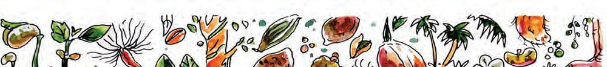
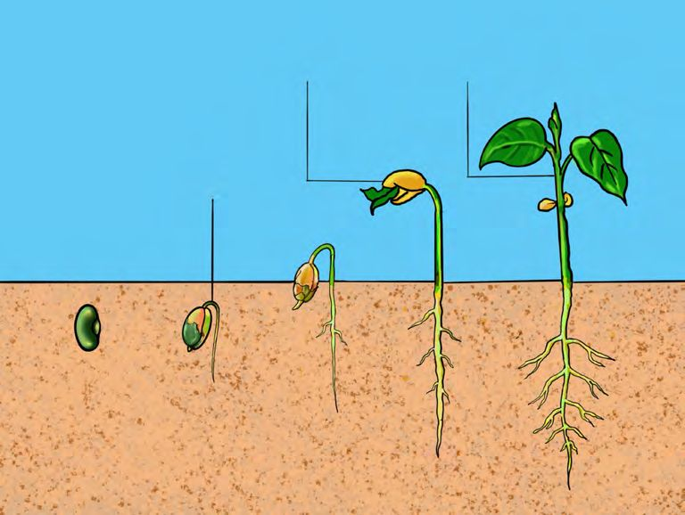
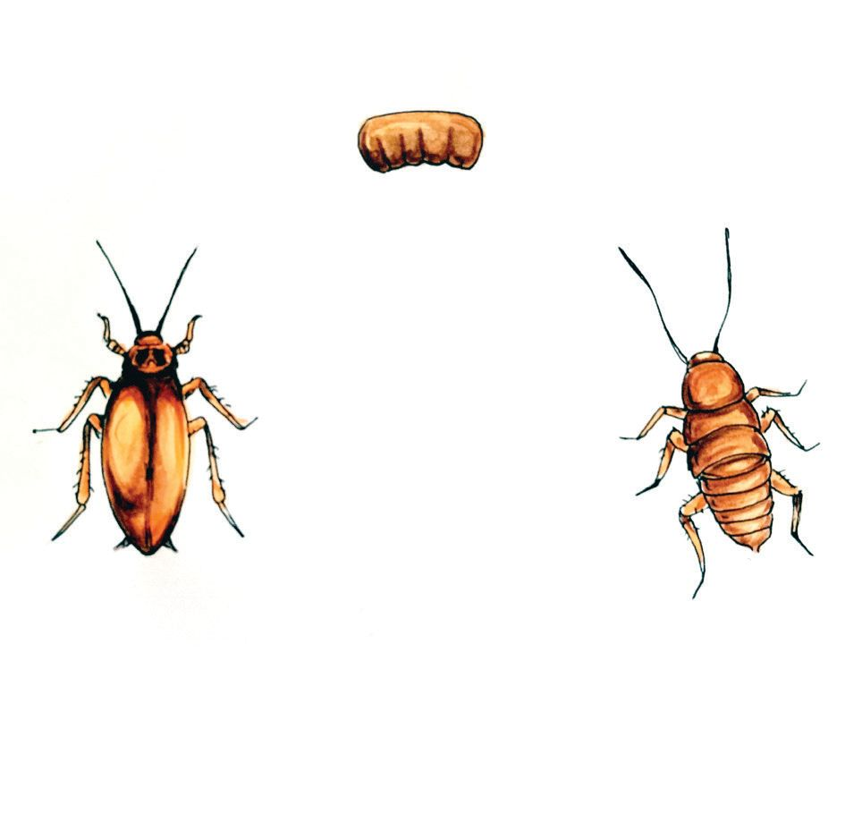
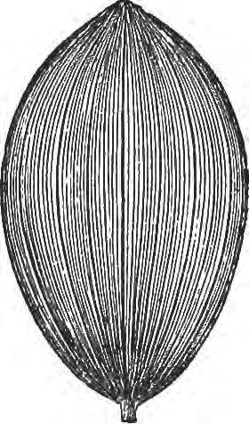
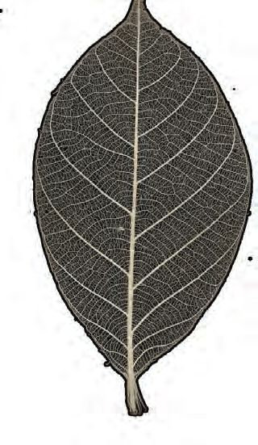
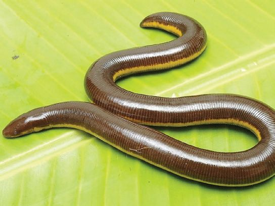
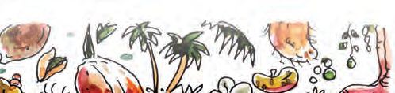
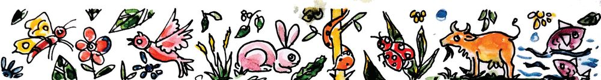

8 DIVERSE ORGANISMS
How did this worm
get inside
the mango?
Picture 8.1
What is your guess?
Discuss with your friends and write the findings in your Science
Diary.
Are worms found only inside fruits?
Haven’t you seen different kinds of worms in your surroundings?
From where do they come?
Worms are formed from the eggs of certain insects. Observe the
picture and record the findings.
Does the antlion hatched from the egg, look like its parent creature?
What are the further changes that happen to the antlion?
Antlion
Antlion(doodlebug) is the larva of a kind of winged
insect called antlion lacewing. They make funnelshaped pits in sand and eat small insects like ants.
They are called antlions because they capture ants.
Its larva makes a cocoon using sand
grains and thin silk fibres secreted
by itself and becomes a pupa. This
pupa undergoes changes to become
the insect.
Metamorphosis
അടിസ്ഥാനശാസ്ത്രം V
In some creatures, the larvae do not resemble to the parent. The
larva formed from the egg goes through different stages of growth
and becomes a creature resembling the parent. This change is
called metamorphosis.
What other creatures do you know that go through such stages
of growth.
139
Page 60

Figure fig_ch03_p060_01 (Page 60)

Figure fig_ch03_p060_02 (Page 60)

Figure fig_ch03_p060_03 (Page 60)
Observe the life cycle of the cockroach.
Egg
Full-grown
cockroach
Nymph
Picture 8.4
Does the offspring of a cockroach look like a cockroach itself?
What are the differences?
They are called nymphs. Nymph goes through different stages
of growth and becomes a fully grown cockroach. During these
stages, the nymph sheds its outer shell many times.
The worms hatched from the eggs of the insects eat leaves and
other plant parts. Thus many such worms adversely affect farming.
Farmers adopt many measures to keep such worms and pests away.
You can reduce
pests if you grow
Marigold in between
the crops.
Illustration 8.1
The chemicals produced by the Marigold keep certain kinds of
pests away.
140 BASIC SCIENCE V
BASIC SCIENCE V
Similarly, what are the other methods you know? Discuss.
Find out and write examples for pests that harm the crops.
Yellow stem borer larva.
Look at the pictures of some spices that we use.
Picture 8.5
Cardamom
Pepper
Clove
Cinnamon
We often keep some spices, along with grains when they are
stored. Why?
The chemicals produced by the plants to protect themselves from
pests make them aromatic spices.
Do worms cause harm only? Listen to what they are saying.
There are
many creatures
that feed on us.
They cannot exist
without us.
We keep the
surroundings
clean by eating
dead creatures
and food waste.
The insects that
grow from us
pollinate many
flowers.
Picture 8.6
Prepare a short note focussing the importance of insects for the
balance of the ecosystem.
BASIC SCIENCE V
Small Insects as Food
People in many parts of the world use insects like
grasshoppers, worms, beetles, scorpions and ants
for food. Small insects are a good source of proteins
and vitamins.They are also kept for food in some
areas because of the availability of low cost protein.
Colourful Insects
Butterflies are a group of the insect family. How many names of
butterflies found in our area are known to you?
Observe the pictures and identify the butterflies.
Some butterflies lay eggs on particular plants. The parts of these
plants are the food of the butterfly larvae.
Look at the names of some of the butterflies found in our area.
Naraka Salabham (Lime butterfly), Arali Salabham (Common crow),
Vellila Thozhi (The Commander), Erukku Thappi (Plain Tiger).
Why are these butterflies named so? Discuss.
Find more examples and write in your Science Diary.
For the survival of butterflies both nectar plants and host plants
are necessary. Butterflies get nectar from the nectar plants. The
larvae feed on the host plants. A butterfly garden is a garden
with both these kinds of plants.
Grow a butterfly garden in your school.
Moths
Picture 8.8
During which time do we see butterflies? Do we see them at night?
What are their features?
They are Moths. Unlike butterflies, most of them are not colourful.
Some moths have feather-like antennae. Silk is produced from
the cocoon made by the larva of a kind of moth.
Blue Tiger Moth (Venkana Neeli)
Blue tiger moth is a kind of blue coloured
moth found during day time. They are
mistaken for butterflies because of their
blue colour. They are called Venkana Neeli
because they lay eggs on the Carallia tree
(Venkana tree). They satisfy all the features of moth
except that they are seen during day time and have blue
colour. So they are included in the moth family.
BASIC SCIENCE V
The World of Small Creatures
How many of the small creatures are familiar to you?
Write the names of the creatures given in the picture in your
Science Diary.
Picture 8.9
Ants are small creatures mostly found everywhere in our
surroundings. Are all ants of the same kind?
How many types of ants do you know? Write down their names.
Yellow crazy ant (chonan urumb)
Division of Labour
Ants are small creatures living as a community. Different types
of ants can be found in a colony of ants, performing the tasks of
laying eggs, collecting food and protecting from enemies.
144 BASIC SCIENCE V
BASIC SCIENCE V
Have you seen winged ants? When do the wings grow?
Male and female ants that perform the reproductive function come
out of their colonies with wings. They mate with male and female
ants from another colony and form new colonies.
Let's Observe Ants
Shall we observe ants in our surroundings? What can be observed?
uColour
v Size
w Habitat
x Food
y Way of collecting food
z Movement
Illustration 8.3
Prepare a booklet with your findings.
BASIC SCIENCE V
How many other small creatures do you know that live as a
community?
Termites
The Body of Insects
Observe the body parts such as antennae, legs, wings and eyes
of the insects.
Picture 8.10
What are the characteristics of these body parts?
Do other insects also have these characteristics?
Present your findings as a seminar.
Fishes
You have learned the adaptations of fish for aquatic life, haven't
you? What are they?
Offsprings of fish are hatched from eggs.
In which months do fish lay eggs in our area?
Why is there a ban on trolling on the Keralam coast in June and
July? Discuss with your friends and present the conclusions in
the class.
146 BASIC SCIENCE V
BASIC SCIENCE V
Floodplain breeding run (Ooothakayattam)
The migration of the fishes in large numbers to
water bodies such as streams, fields, small lakes
and backwaters for breeding during the monsoon in
the month of June is known as floodplain breeding
run. Catching fish during this period will reduce the
stock of fishes. Fishing during this period is illegal.
Some fishes hatch their eggs inside their body.
Find out and write examples for such fishes.
Shark
The fishes in the picture are familiar to you, aren’t they? Compare
their habitats and prepare a note.
Sardine
Mushi
Amphibians
Picture 8.11
Look, there are
many fish in our
water lily pond.
They are not fish,
they are tadpoles.
Illustration 8.4
BASIC SCIENCE V
147
Page 68
Figure fig_ch03_p068_01 (Page 68)

Figure fig_ch03_p068_02 (Page 68)

Figure fig_ch03_p068_03 (Page 68)

Figure fig_ch03_p068_04 (Page 68)
Observe the life cycle of a frog.
You can see many changes that the
tadpole undergoes to attain full
growth and become a frog.
What are the adaptations that
the tadpoles have for living in
water?
How do they breathe?
Discuss and record your findings
in your Science Diary.
Listen to what the frog says.
Picture 8.12
The first phase
of our life cycle
is completely in
water.
When we
are fully grown,
we live in both land
and water.
We have
spines.
We are
called
amphibians.
Picture 8.13
Attempt to define amphibians.
Caecilians
Caecilians are another type of amphibians
found in Keralam. They are also known
as Blind Snakes (Kurudi). Their eyes are
covered with transparent skin. They are
often mistaken for snakes.
Picture 8.14
Most of the snakes are non-venomous.
Only five species of snakes found in Keralam
are venomous.
In Case of Snake Bite
●
●
Do not injure the bite site or try to suck out the venom.
Don't panic the bitten person. Console and help them stay
calm.
● The bitten person should be taken to hospital immediately.
Discuss the ecological importance of snakes and prepare a note.
Feathered Friends
Haven’t you learned about the characteristics of birds? How many
birds can you identify? Try to list them. Observe any five birds in
your neighbourhood and write about them in your Science Diary.
What are the things to observe?
Some mammals are domestic animals. For what purposes do we
keep them?
For meat
Even though domestic animals are helpful to us, sometimes humans
get diseases from them. Find out and list such diseases.
Rabies
What precautions should we take while interacting with domestic
animals?
Fishes, amphibians, reptiles, birds and
mammals have spines.
Extinct Creatures
Many creatures that existed once on Earth have become extinct due
to various reasons. The causes of their extinction such as extreme
cold, drought, meteorite fall, epidemics and volcanic eruption are
not under human control. However by destroying their habitats
humans also play a major role in the extinction of creatures.
BASIC SCIENCE V
What are the human activities that destroy the living conditions
of creatures? Are these activities happening around you? Discuss.
Restoration of habitats is our responsibility. What could be done
for this? Present your suggestions.
Get familiar with some of the endangered creatures of Keralam.
Find more examples.
Tiger spider
Fungoid frog
Indian pangolin
Picture 8.25
Creatures and Superstitions
Look at the creatures in the picture.
Barn owl
Western blind snake
Indian star tortoise
Serpent
Picture 8.26
There are many misconceptions about these creatures. What
problems do such misconceptions create?
●
Financial exploitation
●
Extinction of creatures
●
Organise a seminar on this topic in the class.
154 BASIC SCIENCE V
BASIC SCIENCE V
Page 75
Figure fig_ch03_p075_01 (Page 75)

Figure fig_ch03_p075_02 (Page 75)
Let's assess
1.
Which all creatures that have the following characteristics are
found around you?
Do not have scales, have moist
skin, live on both land and water.
Live in water, have scales,
have fins that help them to move in
water.
Have scales on legs, have feathers,
can fly.
World of
Creatures
They have body parts such as
head, chest, stomach, etc. Have six
legs, antennae and exoskeleton.
Have pinna, feed milk to their
young ones.
2.
You have studied the characteristics of fishes, amphibians
and reptiles. Compare these creatures based on the following
characteristics.
Characteristics
Creature
Skin
Breathing
Habitat
Eggs and
offspring
Fish
Amphibian
Reptile
BASIC SCIENCE V
155
Page 76

Figure fig_ch03_p076_01 (Page 76)
3.
Complete the crossword puzzle.
To the right
1. A Butterfly found in our area.
5. A nocturnal bird.
6. A freshwater mammal.
Downward
2. An amphibian that looks like an earthworm or a
snake.
3. The category of creatures which lizards, snakes and
tortoises belong to.
4. The larva of an insect.
Some birds come to our area from distant lands. Collect and
record the following information about these types of birds.
The months
Name of the
they are found
bird
in Keralam
2.
Place where
they come
from
Reason for the
migration
Prepare a digital presentation for a seminar on ‘Butterfly
diversity in my area’ including details and pictures.
CONSTITUTION OF INDIA
Part IV A
FUNDAMENTAL DUTIES OF CITIZENS
ARTICLE 51 A
Fundamental Duties- It shall be the duty of every citizen of India:
(a) to abide by the Constitution and respect its ideals and institutions,
the National Flag and the National Anthem;
(b) to cherish and follow the noble ideals which inspired our national struggle
for freedom;
(c) to uphold and protect the sovereignty, unity and integrity of India;
(d) to defend the country and render national service when called upon to do so;
(e) to promote harmony and the spirit of common brotherhood amongst all the
people of India transcending religious, linguistic and regional or sectional
diversities; to renounce practices derogatory to the dignity of women;
(f) to value and preserve the rich heritage of our composite culture;
(g) to protect and improve the natural environment including forests, lakes, rivers,
wild life and to have compassion for living creatures;
(h) to develop the scientific temper, humanism and the spirit of inquiry and reform;
(i)
to safeguard public property and to abjure violence;
(j) to strive towards excellence in all spheres of individual and collective activity
so that the nation constantly rises to higher levels of endeavour and
achievements;
(k) who is a parent or guardian to provide opportunities for education to his child or,
as the case may be, ward between age of six and fourteen years.
CHILDREN'S RIGHTS
Dear Children,
Wouldn’t you like to know about your rights? Awareness about your rights will inspire
and motivate you to ensure your protection and participation, thereby making social
justice a reality. You may know that a commission for child rights is functioning in our
state called the Kerala State Commission for Protection of Child Rights.
Let’s see what your rights are:
• Right to freedom of speech and
expression.
• Right to life and liberty.
• Right to maximum survival and
development.
• Right to be respected and accepted
regardless of caste, creed and colour.
• Right to protection and care against
physical, mental and sexual abuse.
• Right to participation.
• Protection from child labour and
hazardous work.
• Protection against child marriage.
• Right to know one’s culture and live
accordingly.
• Protection against neglect.
• Right to free and compulsory
education.
• Right to learn, rest and leisure.
• Right to parental and societal care,
and protection.
Major Responsibilities
• Protect school and public facilities.
• Observe punctuality in learning
and activities of the school.
• Accept and respect school
authorities, teachers, parents and
fellow students.
• Readiness to accept and respect
others regardless of caste, creed or
colour.
Contact Address:
Kerala State Commission for Protection of Child Rights
'Sree Ganesh', T. C. 14/2036, Vanross Junction
Kerala University P. O., Thiruvananthapuram - 34, Phone : 0471 - 2326603
Email: childrights.cpcr@kerala.gov.in, rte.cpcr@kerala.gov.in
Website : www.kescpcr.kerala.gov.in
Child Helpline - 1098, Crime Stopper - 1090, Nirbhaya - 1800 425 1400
Kerala Police Helpline - 0471 - 3243000/44000/45000
Online R. T. E Monitoring : www.nireekshana.org.in